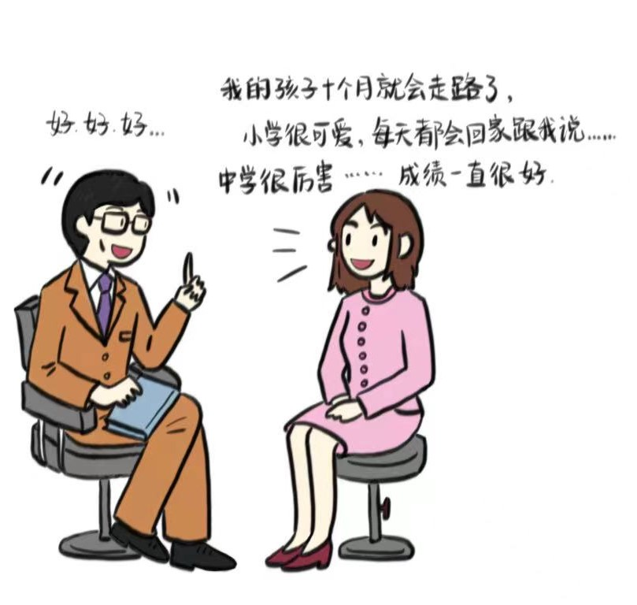

家长教育焦虑
爱与焦虑，期待与压力，家长教育焦虑是当下许多家庭共同面对的挑战。在这个孩子成长的道路上，家长们常常为了确保孩子得到最好的一切而陷入焦虑之中，同时，孩子们也承受着来自各个方面的压力。
通过关注家长教育焦虑所衍生的问题，我们希望每位家长都能够意识到焦虑的产生，理性对待孩子成长的问题。只有在家长与孩子之间建立起相互尊重和理解的关系，孩子的成长道路才会更加健康、快乐。
点击查看 “焦虑家长和陀螺小孩”
下面几组漫画展示了家长焦虑与孩子压力的现实。
一位焦虑的家长坐在凳子上，面对一个教育专家。家长情绪激动地说个不停，从孩子出生开始细数过去，而专家却无法插话。 |

|
该段子一开始起源于中国北京的海淀，一名海淀家长的朋友圈被转发到微博上，3岁娃，1500的单词量这两个对比强烈的数字很快就火了起来，大家也纷纷开启了对海淀家长的调侃模式。
近日，北大教授丁延庆在接受采访时就谈到了这个问题，他说，我一直有所耳闻，说海淀区的小学生非常牛。我听过那个段子，但是当孩子的班级举行班级活动时，我听了几位家长的聊天，又私下问了几位家长，孩子会多少英语单词？我发现，他们的孩子都能掌握上千个单词，3岁孩子会1500个单词，这真的不是段子！
该段子源于一位家长对自招学院的刘老师的问询微信，前后情绪的转变对比强烈，产生了诙谐之感，于是传播成为了教育焦虑的段子。生活中这样的家长也不在少数，对孩子盲目焦虑，四处闻讯专家，但又听不进他人劝导，期待老师按照自己的思路回答从而缓解焦虑。 |
|
不少家长会在与其他家长攀谈时得知其他孩子的补习班状况，从而出于攀比心理给自己的孩子报补习班。
一些家长会在夜深人静的晚上不停地担心孩子被人超越，想到其他孩子都报了补习班，就会下定决心给自己孩子也报。 |
|
双减政策出现后，无法补课的家长有这样的奇思妙想——要是孩子被抓进去，也能够规律作息，好好学习，为什么不抓孩子呢？ |

|

|
美国母亲M的疑惑与中国母亲们的热情分享形成鲜明对比，凸显了部分中国家长在英语教育上的过度焦虑。
从核桃油到高级营养师证，妈妈们为孩子的营养费尽心思，透露出对孩子成长的深深担忧。

|
|